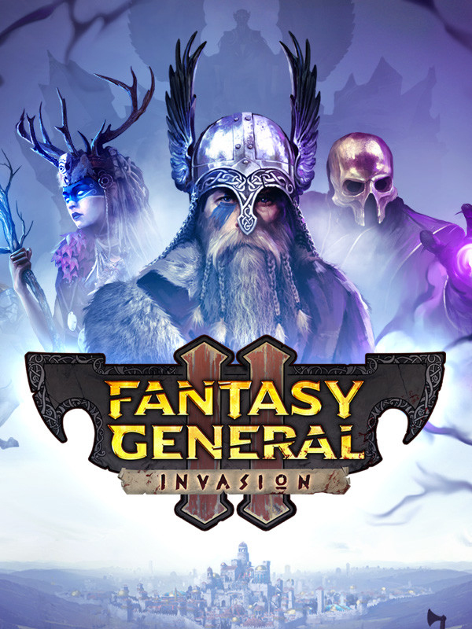

Fantasy General II
Fantasy General II
Details
|  | |
| Playtime | Not Played |
| Last Activity | Never |
| Added | 16/07/2025 22:43:24 |
| Modified | 16/07/2025 22:43:45 |
| Completion Status | Not Played |
| Library | Steam |
| Source | Steam |
| Platform | PC (Windows) |
| Release Date | 05/09/2019 |
| Community Score | 60 |
| Critic Score | |
| User Score | |
| Genre | Card & Board Game Role-playing (RPG) Strategy Tactical Turn-based strategy (TBS) |
| Developer | Owned by Gravity |
| Publisher | Slitherine Ltd. |
| Feature | Multiplayer Single Player |
| Links | Official Steam GOG Twitch YouTube Uknown Uknown |
| Tag | |
Description
Three hundred years have passed since the Shadow Wars have ravaged Keldonia and the world of Aer, and the struggles of the past have long since faded into legends.
In the Highlands of Fareach, Clans of Barbarian warriors have eked out a living in the harsh northern climate, constantly feuding with each other and raiding the wealthier Borderland towns. Fed up with these constant attacks, the Borderland Clans called on the Empire for help – a powerful realm controlling the land from the Scarlett Mountains to Cynehelm Valley and the Hoarwood. The Western Imperial Legion was sent to face the highland raiders, and with the help of the Borderland clans Iseal and Machnar, killed High King Brendan in the battle of Wyrm’s Pass.
A treaty was signed that forbade any clan from crossing into the Borderlands in return for peace. Since then, there has been no High King to unite the Clans, and they fell into quarrelling and raiding amongst themselves.
In these dark times your clan has been led by Falir One-Eye, a warrior of great renown. You are his son and designated heir, and you are eager to prove your mettle to the Clan Council and your father…
Armies once again draw battle-lines on the war-torn land of Keldonia, and a new generation of commanders will test their bravery and tactics against each other. Fantasy wargaming is back!
Take into consideration terrain, weapons and armour, magical effects, morale, and the balance of forces, make a plan, execute it, and vanquish your enemy, forging your reputation as a savage war-leader.
Each unit comes with their specific abilities, arms and armour, and they can be equipped with magic artefacts you find during battle and upgraded with gold and resources that you need to plunder from your enemy.
Field axemen, berserkers, spearmaidens, trolls and shamans, summon ancestor spirits and mighty elementals or train nimble stag riders and deadly werebears or recruit mercenaries from longbowmen to centaurs.
Face the mighty Legions of the Empire and their magical creations from dragon cannons to golems as well as the Undead hordes they bring to battle, or fight harpies, lizard people and great dragons on your way.
In the Highlands of Fareach, Clans of Barbarian warriors have eked out a living in the harsh northern climate, constantly feuding with each other and raiding the wealthier Borderland towns. Fed up with these constant attacks, the Borderland Clans called on the Empire for help – a powerful realm controlling the land from the Scarlett Mountains to Cynehelm Valley and the Hoarwood. The Western Imperial Legion was sent to face the highland raiders, and with the help of the Borderland clans Iseal and Machnar, killed High King Brendan in the battle of Wyrm’s Pass.
A treaty was signed that forbade any clan from crossing into the Borderlands in return for peace. Since then, there has been no High King to unite the Clans, and they fell into quarrelling and raiding amongst themselves.
In these dark times your clan has been led by Falir One-Eye, a warrior of great renown. You are his son and designated heir, and you are eager to prove your mettle to the Clan Council and your father…
The Legacy
Fantasy General II: Invasion is the reimagination of the strategy game classic from the 90s!Armies once again draw battle-lines on the war-torn land of Keldonia, and a new generation of commanders will test their bravery and tactics against each other. Fantasy wargaming is back!
The Battles
True to the tradition of the original game, Fantasy General II is all about turn-based battles. Lead over 75 different unique unit types, including powerful heroes.Take into consideration terrain, weapons and armour, magical effects, morale, and the balance of forces, make a plan, execute it, and vanquish your enemy, forging your reputation as a savage war-leader.
The Campaign
Battle after battle, you will need to make decisions and develop your army. The young clan members will need to be trained, and as they gain enough experience, even the greenest recruits can be turned into champions. But beware: costly victories can be worse than a defeat… when battle-hardened units perish, so does their progression and experience.Each unit comes with their specific abilities, arms and armour, and they can be equipped with magic artefacts you find during battle and upgraded with gold and resources that you need to plunder from your enemy.
The Clans
A confederation of autonomous hill-land tribes, who value their independence and will fight fiercely for it.Field axemen, berserkers, spearmaidens, trolls and shamans, summon ancestor spirits and mighty elementals or train nimble stag riders and deadly werebears or recruit mercenaries from longbowmen to centaurs.
The Empire
The most powerful realm on the face of Aer.Face the mighty Legions of the Empire and their magical creations from dragon cannons to golems as well as the Undead hordes they bring to battle, or fight harpies, lizard people and great dragons on your way.